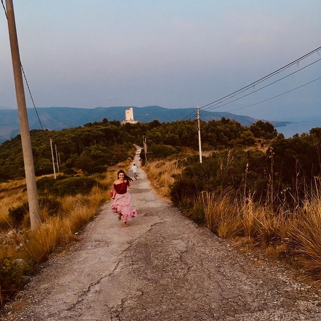
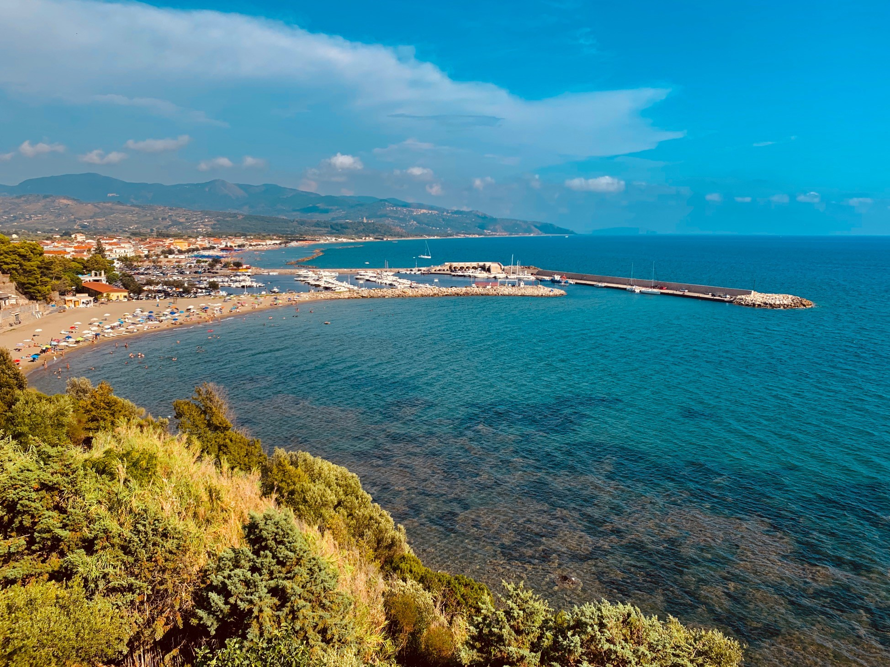
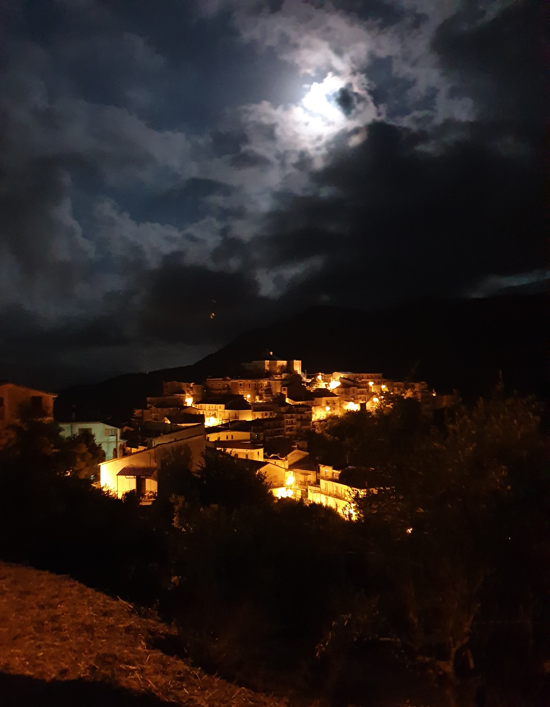
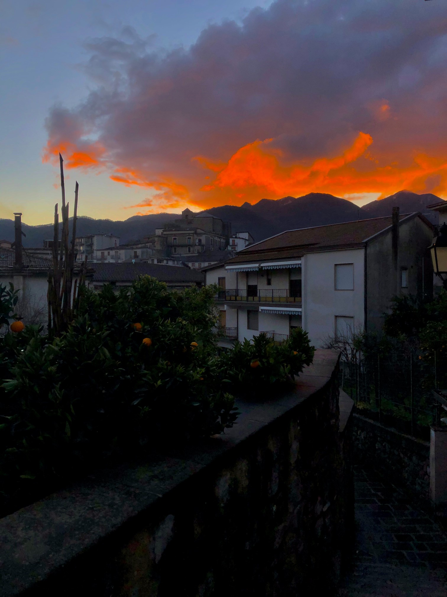

Aurelia Merola
" E’ come se il Nulla abbracciasse
il Tutto e quest’ultimo
si facesse abbracciare"
Eccomi!!

Sono Aurelia Merola, originaria di Rofrano, un paesino nel bel mezzo del Parco
Nazionale del Cilento; mia fonte d’ispirazione grazie ai suoi suggestivi paesaggi.
Le tradizioni, l’originalità , la verginità , i fianchi dei grandi monti e le
piccole stradine avvolte dalle chiome degli imponenti alberi che abbracciano questo
piccolo paradiso terrestre, lo rendono Speciale.
Tanti mi definiscono ‘allegra’, io preferisco definirmi ‘amante della
vita’. L’ aria fresca e qualche filo d’erba
sono la mia pace e la positività, l’ottimismo e la meraviglia sono i tre ingredienti
che uso per condire la mia quotidianità.
Ho frequentato il Liceo Scientifico a
Vallo Della Lucania e ora studio fisica a Milano, città in cui mi sono trasferita
da poco. La mia giovane vita è bizzarra e non a caso sono completamente innamorata
delle sfumature. Nel tempo libero scivolo nel mondo della pittura, della lettura
e della scrittura sognando orizzonti illimitati sul mio rustico terrazzino.
"Il futuro è ancora da costruire, ma il presente crea le fondamenta."
Luoghi Magici
Tabbed Image Gallery
Click on the images below:




×